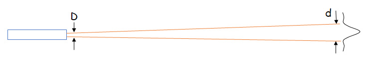
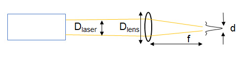
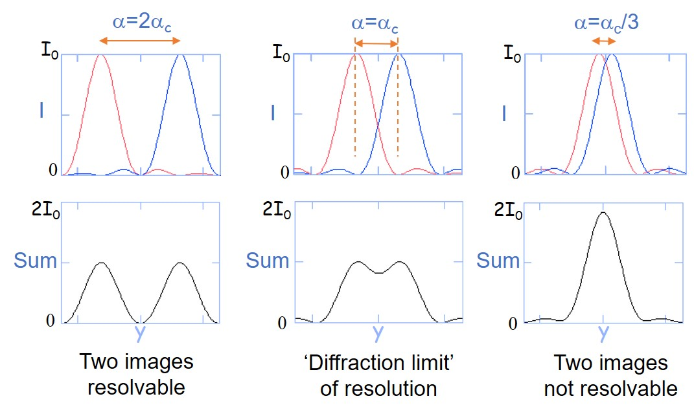
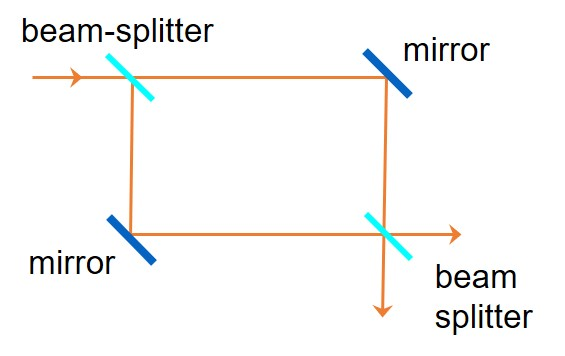
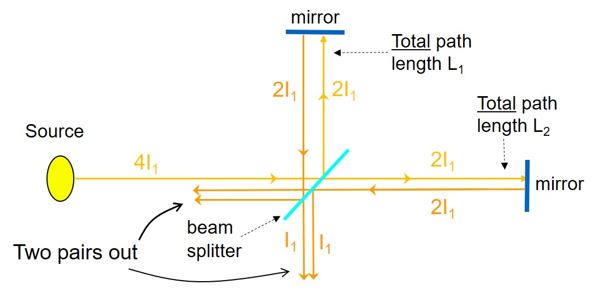

圆孔衍射
基本模型
与单缝衍射类似，但是障碍物为圆孔，而不是光缝。基本模型如下图所示

中心最亮的光斑为”艾里斑“，包含了成像 $84%$ 的能量。
和单缝衍射的分析方式类似，计算第一极小的角度： $$ \theta_0\approx1.22\frac\lambda D $$ 注意比较圆孔衍射与单缝衍射第一极小位置的差异。其中 $1.22$ 为一阶贝塞尔函数的第一零点 $J_1\left(Z\right)=0$ 。
其他应用
对于以下两大模型，圆孔衍射公式同样适用：
激光

对于波长为 $\lambda$ 发射直径为 $D$ 的激光，衍射角度为 $\theta_0\approx1.22\frac\lambda D$ ，成像直径为 $d\approx2\theta_0L\approx2.44\frac{\lambda L}{D}$ 。
透镜成像

对于波长为 $\lambda$ 发射直径为 $D_\mathrm{laser}$ 的激光，经过直径为 $D_\mathrm{lens}$ 、焦距为 $f$ 的透镜，需要取二者的较小值 $D=\min\left{D_\mathrm{laser},D_\mathrm{lens}\right}$ 。衍射角度为 $\theta_0\approx1.22\frac\lambda D$ ，成像直径为 $d\approx2\theta_0L\approx2.44\frac{\lambda f}{D}$ 。
清晰度问题
对于透镜成像的摄影方式，若两个点光源进入透镜光线的夹角为 $\alpha$ ，透镜直径为 $D$ ，应用圆孔成像公式，图像在焦距处的成像角度为 $$ \alpha_\mathrm{c}=1.22\frac{\lambda}{D} $$ 因此，当 $\alpha=2\alpha_\mathrm{c}$ 时，图像完全分离；当 $\alpha=\alpha_\mathrm{c}$ 时达到可分辨的极限。

注意此时两个物体的像不会发生干涉，因为波源不同。
光学干涉仪
光学干涉仪是一种将同一束光经过分光镜和反射镜形成两条路径，从而自我干涉的仪器。可用于精密测量位移，或用于测量波长。
马赫-曾德尔干涉仪

迈克尔逊干涉仪

其中，当 $L_1$ 与 $L_2$ 长度发生改变时，会改变输出的干涉，影响输出光的强度。 $$ I_\mathrm{out}=I_\mathrm{in}\cos^2\left(\frac{\phi}{2}\right)=I_\mathrm{in}\cos^2\left(2\pi\frac{\delta}{\lambda}\right) $$